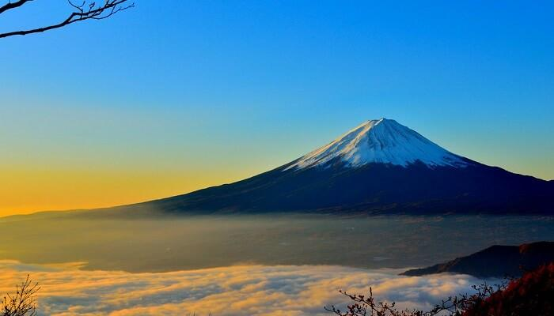

I loved to eat and going out to food hunting either with friends or family. I don't care if my money runs out on food because i really loved to eat and all about food i like. My fav food is always Char Kuey Teow Udang, laksa, patin tempoyak and western food. Whenever i going out to eat i'm always order these food especially char kuey teow. It's really my fav food since i'm in childhood.
Talked about my favourite drink, its always come to Boost. I really loved to buy my drink at boost. Not only that, I'm also loved drink from Tealive and I would like to order flavour Bang Bang Milk Tea and Hazelnut Cocoa This two flavour is may favourite when I go to Tealive.
Japan is my dream places. I really want to go there and eating sushi. Japan is an island country in East Asia located in the northwest Pacific Ocean. It is bordered by the Sea of Japan to the west and extends from the Sea of Okhotsk in the north to the East China Sea and Taiwan in the south. Part of the Pacific Ring of Fire, Japan comprises an archipelago of 6852 islands covering 377,975 square kilometers (145,937 sq mi); the country's five main islands, from north to south, are Hokkaido, Honshu, Shikoku, Kyushu, and Okinawa. Tokyo is Japan's capital and largest city; other major cities include Yokohama, Osaka, Nagoya, Sapporo, Fukuoka, Kobe, and Kyoto.

I want to go to the Mount Fuji to see a beautiful scenery. Mount Fuji is with 3776 metres Japan's tallest mountain. It is not shocking that the almost perfectly formed volcano has been worshipped as a holy mountain and enjoyed huge popularity among artists and common people over the centuries.
Mount Fuji is an active volcano that erupted most recently in 1707. It sits on the boundary between the prefectures of Yamanashi and Shizuoka and can be seen on clear days from Tokyo and Yokohama.